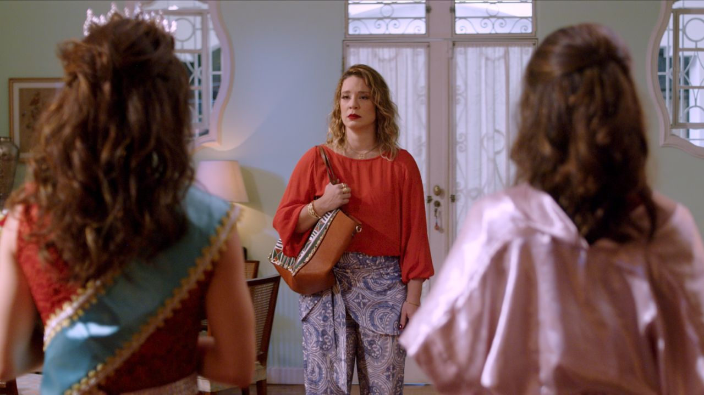

A MISS, de Daniel Porto, ganha pôster oficial e chega aos cinemas em 26 de fevereiro

Exibido em festivais europeus, longa estreia no circuito brasileiro em 26 de fevereiro de 2026, com distribuição da Olhar Filmes.
Após circular por festivais europeus, o longa-metragem “A MISS”, escrito e dirigido por Daniel Porto, divulgou seu pôster oficial. O material antecipa o tom vibrante, provocador e emocional da dramédia, que estreia nos cinemas brasileiros em 26 de fevereiro de 2026, com distribuição da Olhar Filmes.
Pôster traduz conflitos e dialoga com referências de Almodóvar
Segundo o material de divulgação, o cartaz reúne, em uma única imagem, os principais conflitos do filme: o universo dos concursos de beleza, as tensões familiares e questões de identidade e pertencimento que atravessam a narrativa. Com cores intensas e composição que dialoga com referências do cinema de Pedro Almodóvar, o pôster reflete o equilíbrio entre humor, afeto e transgressão.
Para o diretor Daniel Porto, o pôster funciona como uma extensão narrativa do longa:
“A imagem precisava carregar a contradição que move ‘A MISS’: beleza e conflito, afeto e repressão, riso e dor. O cartaz já anuncia esse jogo de tensões que o público vai encontrar na sala de cinema.”
Enredo acompanha ex-miss, filhos gêmeos e um plano inesperado
Protagonizado por Helga Nemetik, Maitê Padilha, Pedro David e Alexandre Lino, A MISS acompanha Iêda, ex-vencedora de concurso de beleza que sonha em ver a filha repetir seu feito. O plano toma rumos inesperados quando o filho gêmeo, Alan, revela talento e desejo que desafiam expectativas maternas e padrões impostos.
Na sinopse, Iêda (Helga Nemetik) quer que Martha (Maitê Padilha) siga a tradição e vença um concurso de Miss, mas a filha não tem aptidão nem interesse. Já Alan (Pedro David) parece ter mais talento para “reivindicar a faixa e a coroa”. Com a ajuda do “tio Athena” (Alexandre Lino), os irmãos elaboram um plano para que Alan realize o sonho da mãe sem que ela saiba.
Passagem por festivais europeus
Antes de chegar ao circuito comercial brasileiro, A MISS integrou a programação de festivais como:
Actrum International Film Festival (Espanha)
18º OMOVIES – Festival Internacional de Cinema LGBTQIA+ (Itália)
39º Queergestreift Film Festival Konstanz (Alemanha)
A produção é assinada por Alexandre Lino, Daniel Porto e Angélica Coutinho.
Serviço
A MISS Estreia nos cinemas: 26 de fevereiro de 2026 Distribuição: Olhar Filmes
Sobre Daniel Porto (diretor e roteirista)
Indicado ao Prêmio APCA, Daniel Porto é dramaturgo, roteirista e diretor nascido em São Gonçalo (RJ). Estreou no teatro em 2013 e já escreveu mais de 15 peças. No audiovisual, foi Redator Final de programas do Canal Multishow. Dirigiu o curta LGBTQIAPN+ “CHEMSEX”, com estreia internacional no GAZE (Irlanda). É roteirista do curta “ROUTINE”, filmado em NY. Finalizou seu primeiro longa, “A MISS”, com roteiro desenvolvido no laboratório francês do Festival Varilux de Cinema Francês.
Sobre a Olhar Filmes
Distribuidora e produtora de obras independentes focada na diversidade do audiovisual nacional e estrangeiro. Fundada em 2017, em Curitiba, lançou mais de 40 obras no mercado brasileiro e se consolidou como distribuidora especializada no lançamento de filmes LGBTQIAPN+, principalmente títulos voltados ao público jovem.